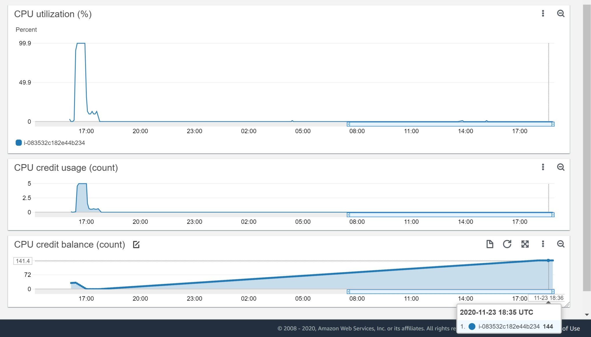
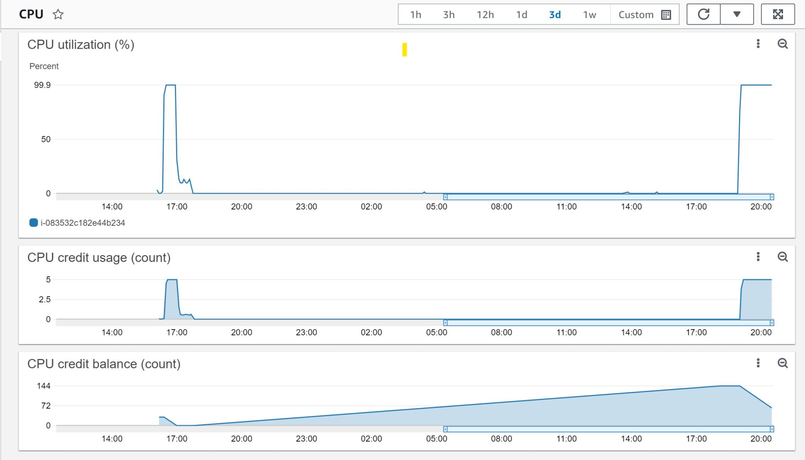
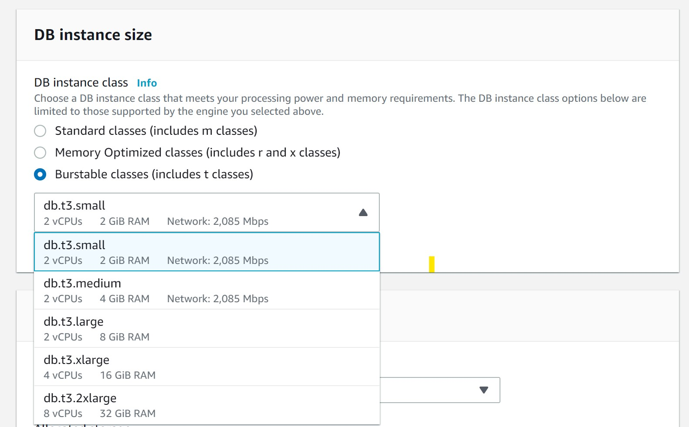

This was first published on https://www.dbi-services.com/blog/aws-burstable-ec2-cloudwatch/ (2020-11-23)
Republishing here for new followers. The content is related to the versions available at the publication date.
.
Your application workload is usually not constant and maybe not predictable. If you undersize the capacity, you will save money but in case of peak of activity you will have severe performance issues. Thus, you need to size the capacity for peak workloads: you pay for idle CPU when out of those peaks. This is one major reason for virtualization and cloud: elasticity. Because the hardware is shared by multiple applications, which probably don’t have their workload peak at the same time, you don’t have to size the physical capacity for the sum of peak activity, as you would have to do if each application run on dedicated hardware. AWS has many features to choose between reserved capacity and auto-scaling ones. Here is as very simple one that is even available in the Free Tier: burstable compute.
I have created an EC2 t2.micro instance. And I’m displaying 3 metrics in a CloudWatch:
I started with 32 minutes of “CPU Credit Balance”. This means that I can run at 100% CPU for 32 minutes. This credit stays and even increases when I’m not using the CPU. At 16:20 have started a program running fully in CPU ( `yes > /dev/null` ). I used 100% of CPU until 17:00 approximately and then the “CPU Utilization (%)” decreased to around 20% which is the baseline in this t2.micro when credits are exhausted. The “CPU Credit Usage” was at 5 during all this period because it is gathered every 5 minutes: during 5 minutes running at 100% CPU you use 5 minutes of credit. And during that time you see the “CPU Credit Balance” decreasing down to zero. I stopped my `yes` process at 17:45 where the “CPU utilization” is at 0% as nothing is running, and the “CPU credit balance” starts to grow again slowly.
From this CloudWatch “CPU Utilization” you cannot say if between 17:05 and 17:35 you are only 20% CPU usage because the process doesn’t need to (being idle) or because it is throttled by lack of CPU credit. But you can guess it when you look at the credit balance and usage. Let’s have a look at the default SAR statistics gathered every 10 minutes:
[ec2-user@ip-172-31-42-243 ~]$ sar
04:04:59 PM LINUX RESTART
04:10:01 PM CPU %user %nice %system %iowait %steal %idle
04:20:01 PM all 0.02 0.00 0.02 0.00 0.00 99.95
04:30:01 PM all 45.88 0.00 0.58 0.09 0.01 53.44
04:40:01 PM all 99.02 0.00 0.96 0.00 0.02 0.00
04:50:01 PM all 99.03 0.00 0.95 0.00 0.01 0.00
05:00:01 PM all 99.04 0.00 0.95 0.00 0.01 0.00
05:10:01 PM all 28.03 0.00 0.23 0.00 71.74 0.00
05:20:02 PM all 17.50 0.00 0.12 0.00 82.39 0.00
05:30:01 PM all 18.90 0.00 0.11 0.00 80.99 0.00
05:40:02 PM all 18.83 0.02 0.16 0.00 81.00 0.00
05:50:01 PM all 3.45 1.07 1.10 4.60 33.31 56.47
06:00:01 PM all 0.02 0.00 0.02 0.00 0.00 99.96
06:10:01 PM all 0.02 0.00 0.02 0.00 0.02 99.94
06:20:01 PM all 0.03 0.00 0.01 0.00 0.01 99.95
06:30:01 PM all 0.01 0.00 0.01 0.00 0.00 99.98
Before starting my program, the CPU was nearly 100% idle, until 16:20. Then when it was running the CPU was used at nearly 100% in user space until 17:00. Then, the CPU usage is nearly 20% until I stopped the process at 17:45. This is exactly the same as what CloudWatch displays. But SAR has an additional metric here: “%steal” and this is how I know that it was not idle but throttled by the hypervisor. My process was 100% in Running state but this shows up as 20% CPU usage and 80% stolen. Then I’ve stopped the process and %user and %steal is down to zero – all time is idle.
And once the CPU is idle, my CPU credits start to increase again: 
24 hours later I earned 144 minutes of CPU. I’ll not earn more – this is the maximum. Of course all that is documented in the instance type description (https://aws.amazon.com/ec2/instance-types/) and Burstable CPU description (https://docs.aws.amazon.com/AWSEC2/latest/UserGuide/burstable-credits-baseline-concepts.html): an idle t2.micro gets 6 minutes of credits every hour, with a maximum of 144. The only thing that differs from documentation in my example is the baseline, which should be 10% when out of credits, but I am above here. No idea why.
I’ve started again a process that never sleeps: 
It can run at 100% for 144 minutes but I stop it there, this is the same pattern as above.
Just one thing, CloudWatch doesn’t tell it to you but “CPU utilisation%” includes the time running in kernel (%system). Instead of running `yes > /dev/null` I have run `dd if=/dev/urandom of=/dev/null bs=1M` which runs mostly in kernel space:
03:20:01 PM CPU %user %nice %system %iowait %steal %idle
09:00:01 PM all 0.02 0.00 99.96 0.00 0.02 0.00
Average: all 7.73 0.00 1.26 0.00 0.01 91.00
Aurora can run on db.t3 medium and large. But you may also look at auto-scale and maybe serverless. Oracle Database does not benefit a lot from burstable instances because the software license is paid on processor metric, which counts on full vCPU rather than the baseline, so you probably want to use 100% of it as long as you need.
{kind=link}
{kind=link}
{kind=link}
{kind=link}